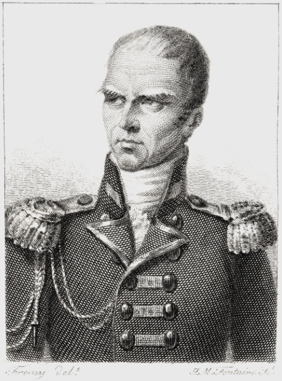
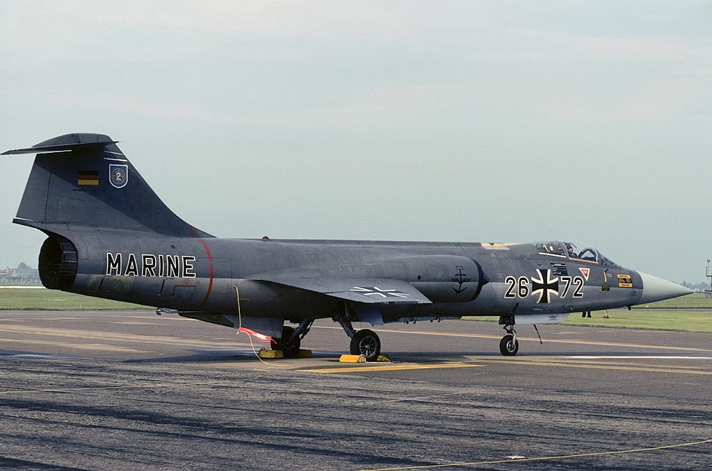
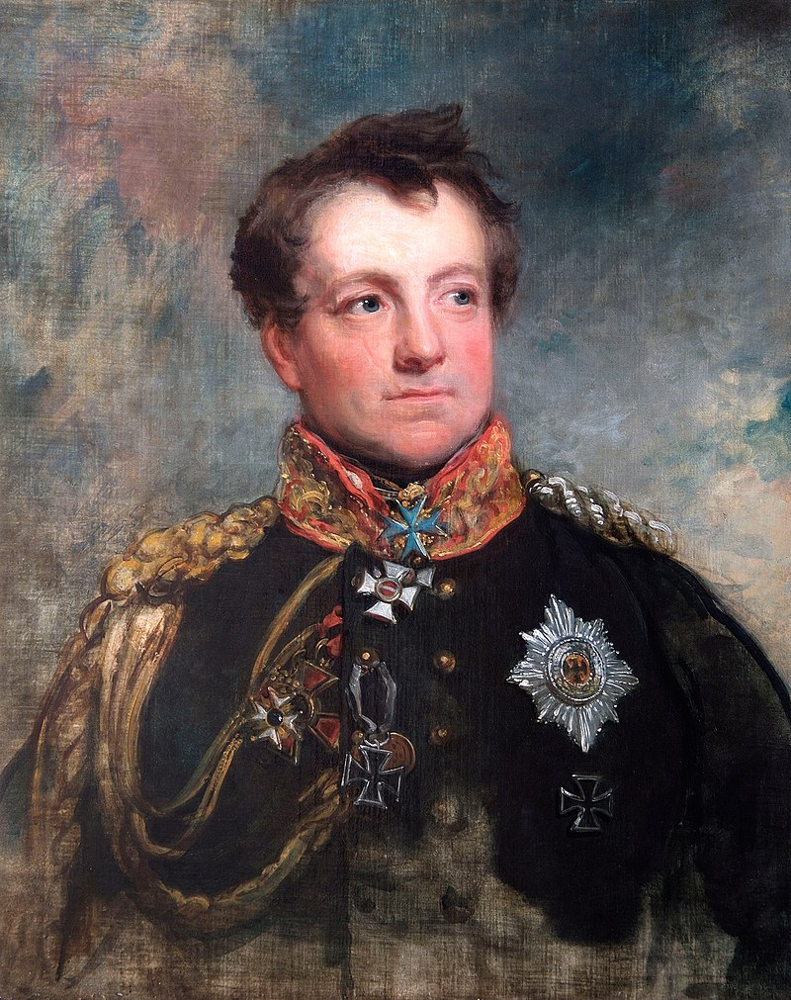
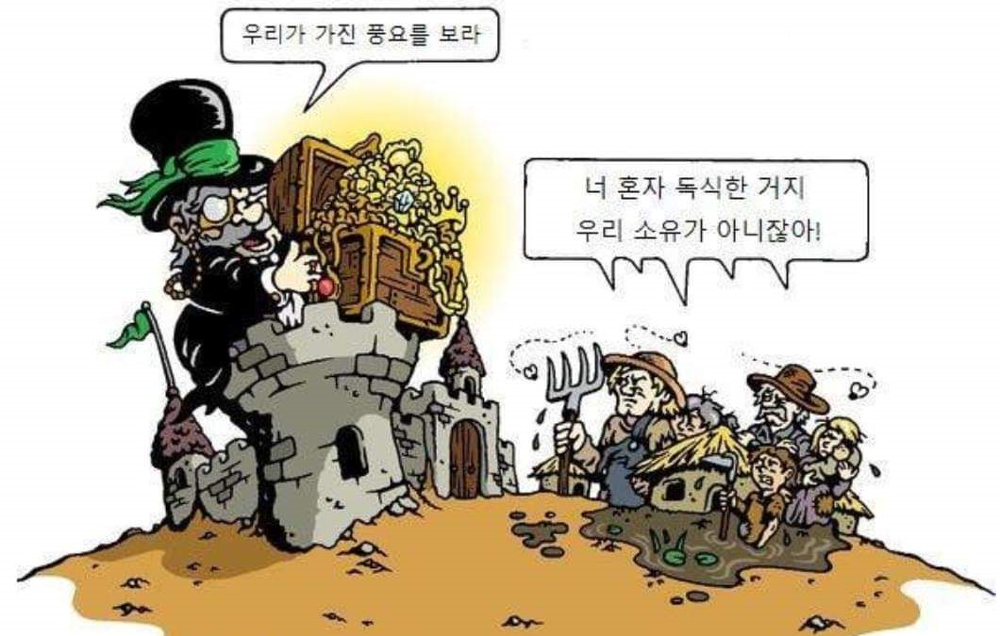
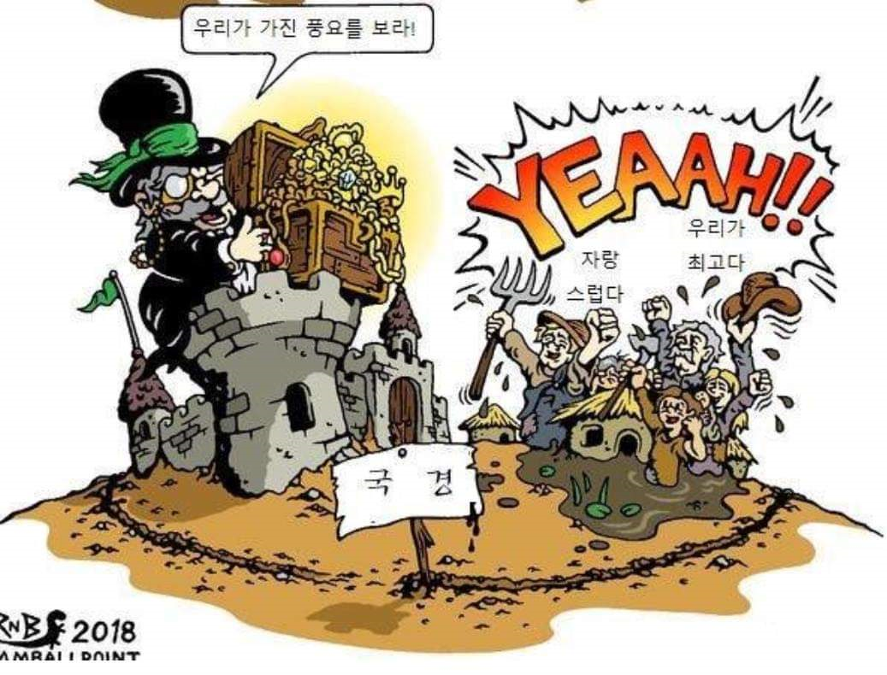

최초의 민족 전쟁? - "나의 국민에게"(An mein Volk)
게시: 2022-05-09T06:30:47+09:00
먼저, 언제나 문제는 프리드리히 빌헬름 본인이었습니다. 러시아와의 동맹 체결을 위해 2월 26일 칼리쉬로 떠나면서 샤른호스트는 한시가 급한 프로이센군 병력 증강안을 세세히 마련해두었습니다. 그 요지는 대국민 호소에 따른 국민방위군(landwehr)의 대대적인 증강이었습니다. 그러나 샤른호스트가 칼리쉬로 떠나자마자 그런 모병 움직임은 딱 멈추고 말았습니다. 프리드리히 빌헬름은 나폴레옹에 대한 선전포고를 최대한 늦추고 싶어했고, 또 지엄하신 호헨촐레른 왕가의 수호를 귀족들이 아닌 평민들에게 호소하여 국민방위군을 모집한다는 것이 무척 못마땅했기 때문이었습니다. 프리드리히 빌헬름의 이런 마음가짐은 재빠른 병력 증강을 위해서는 프랑스식으로 국민군을 모병해야 한다는 개혁파 관료들의 염원에 정면으로 대치되는 것이었습니다. 하르덴베르크 등 개혁파 관료들이 재촉하자, 프리드리히 빌헬름은 국민방위군이라는 것을 모집한다고 해도, 그걸 누가 지휘하느냐, 귀족 출신의 장교들이 부족하지 않은가 라며 사실상 거부권을 행사했습니다. 이런 미적거림은 3월 6일 샤른호스트가 칼리쉬에서 브레슬라우로 돌아오자마자 끝났습니다. 신병 모집과 부대 편성 작업에는 가속이 붙었고, 샤른호스트를 뒤따라 프로이센에 들어온 영국군 연락 장교 로우(Hudson Lowe) 대령은 '프로이센 영토로 들어오자마자 내가 본 것이라고는 부대들과 신병들이 오가는 모습 뿐이다'라고 흡족하게 적었습니다. 샤른호스트가 부지런히 움직인 덕분에 블뤼허가 지휘관으로 임명된 슐리지엔 군단, 즉 프로이센의 제2 군단은 1만6천의 보병과 6천의 기병, 그리고 100문의 포병대를 갖출 수 있었습니다. 다른 지역의 병력들도 계속 증강되어 이미 전선에 배치되어 있던 요크와 뷜로우의 병력, 그리고 블뤼허의 병력까지 합하면 3월 중순까지 프로이센의 야전군은 총 7만1천에 이르게 되었습니다. 그 외에도 예비병력과 각종 수비대와 지원병력을 구성할 5만6천이 추가로 계속 소집되었습니다.

(허드슨 로우 대령은 원래 아일랜드 태생의 영국인으로, 아버지는 영국 출신 군의관이었고 어머니가 아일랜드인이었습니다. 그는 18세의 나이로 아버지가 복무하던 제50 보병연대에 소위로 들어갔는데, 이후 맡은 임지와 임무를 보면 나폴레옹의 꽁무니를 줄기차게 쫓아다니는 역할을 했습니다. 가령 나폴레옹이 포위 공격하던 툴롱 항구에 지원 병력으로 투입되기도 했고, 코르시카에 주둔하며 나폴레옹 고향집 근처에서 근무하며 'Casa Buonaparte' 즉 보나파르트 장(莊)에서 먹고 자기도 했습니다. 그는 1813년 1월, 당시 러시아군에게 항복한 독일계 그랑다르메 포로들로 이루어진 자원병 부대를 검열하라는 명령을 받고 러시아로 파견되었다가 그때부터 러시아-프로이센 연합군을 따라 긴 여정을 시작하게 되었습니다. 1814년 퐁텐블로에서 나폴레옹이 퇴위하자 그 소식을 맨처음 런던에 전달할 전령으로 뽑힌 것도 바로 로우 대령이었습니다. 그런 인연 덕분에 그는 러시아와 프로이센으로부터 많은 훈장을 받았고 영국군에서도 소장으로 진급하는 영광을 누렸습니다만, 나중에 세인트 헬레나 섬에서 나폴레옹의 간수 노릇을 하는 임무를 받는 불운을 누리기도 했습니다. 그를 나폴레옹의 간수로 임명하면서, 영국 국방부 장관이던 배써스트(Bathurst) 경이 웰링턴에게 보낸 편지에는 이렇게 평을 했는데, 이게 과연 칭찬인지 비웃음인지는 불분명합니다. "우리 군의 장군들 중에 그렇게 사회에서 격리된 오지에서 그런 중책을 기꺼이 맡아줄 더 적절한 사람은 없다고 믿소." 그는 나폴레옹을 무척 포악하게 다룬 간수였고, 나폴레옹이 죽고 나자 그에 대한 비난은 유럽은 물론 영국에서도 꽤 높았습니다. 웰링턴도 로우에 대해서는 '멍청하고 무식한데다 판단력도 부족한 인간으로서 그 인간에게 나폴레옹을 맡긴 것은 실책'이라고 맹비난했습니다.) 프리드리히 빌헬름은 여전히 프랑스에 대한 선전포고를 꾸물거렸지만 칼리쉬 조약으로 프로이센과 러시아의 군사동맹이 공식화된 이상, 나폴레옹과의 전쟁은 기정사실이었습니다. 3월 13일 프로이센은 드디어 프랑스에 대해 전쟁을 선포합니다. 그런데 바로 그 직전인 3월 10일, 프리드리히 빌헬름은 나폴레옹이 만들었던 레종도뇌르 훈장을 본떠 훈장 제도를 하나 만듭니다. 그 첫 수상자는 바로 자신의 사망한 아내인 루이자 왕비였고, 실은 3월 10일이 루이자 왕비의 생일이었기에 일부러 그 날을 기다려서 이 훈장 제도를 발표한 것이었습니다. 이 훈장의 이름이 아이저네스 크로이즈(Eisernes Kreuz, 영어로는 Iron Cross), 즉 철십자 훈장이었습니다. 이건 그토록 나폴레옹을 미워했던 왕비 루이자를 기억하며 두번 다시 프랑스에게 굴복하지 않겠다는 프리드리히 빌헬름의 다짐이기도 했지만, 아무래도 나폴레옹을 이기기 위해서는 나폴레옹을 흉내내야 한다는 역설을 보여주는 것이기도 했습니다.

(어떤 전투기든 탱크든 저 마크를 그리기만 해도 성능이 2배 좋아진다는 무안단물급 마크가 바로 독일의 철십자 마크입니다. 알고 보면 저것도 나폴레옹이 만든 레종도뇌르 훈장의 짝퉁으로 시작한 것이지요. 전쟁통에 급히 만들다보니 그냥 13세기 튜톤 기사단의 상징을 거의 그대로 베껴서 만들었고, 그래서 프랑스의 진퉁 레종도뇌르 훈장에 비해 모양새가 무척 소박합니다. 1871년 통일 독일제국이 창건되면서 독일군의 공식 상징 마크가 되었습니다. 사진은 독일 해군 항공대가 사용한 F-104 Starfighter입니다. 철십자 효과도 이 기종에게는 통하지 않아 엄청나게 사고가 많은 기종이었던 점은 바꿀 수 없었습니다.) 하지만 나폴레옹을 흉내낸다는 것이 어설프게 그의 바따용 까레(Battalion Carré) 진형을 따라한다든가 짝퉁 레종도뇌르 훈장을 만든다든가 하는 것으로 충분했을까요? 나폴레옹의 천재성은 일단 흉내낼 수 있는 것이 아니었습니다. 현지 보급을 강조한다든가 기동성을 중시한다든가 하는 전술적인 면은 언제든지 모방이 가능했지만, 사실 나폴레옹의 성공 뒤에는 프랑스 혁명이라는 대전제가 있었고, 프랑스 혁명의 핵심가치는 신분제의 탈피와 실력에 의한 논공행상이 있었습니다. 나폴레옹의 병사들은 그저 장교들이 폭압적으로 가하는 처벌에 등 떠밀려 기계적으로 움직이는 영국군과는 달라서, 전투에서 패배하더라도 병사들 스스로 재집결하여 반격에 나서는 경우가 많았습니다. '모든 프랑스 병사들은 잡낭 속에 원수봉을 넣고 다닌다' (Tout soldat français porte dans sa giberne le bâton de maréchal)라는 말처럼, 왕후장상에는 씨가 따로 있는 것이 아니며 농부의 아들이라고 해도 공적을 세우기만 하면 장교는 물론 원수도 될 수 있다는 정신이 프랑스군이 강한 배경이었습니다. 그러나 프로이센과 러시아가 나폴레옹과 죽어라 싸웠던 이유가 바로 그런 전통적인 신분제 사회를 지키고자 하는 것이었습니다. 계급적인 시각으로 본다면, 대부분이 농민 출신이던 프로이센 병사들이 한번도 만나보지 못했을 뿐만 아니라 그냥 호헨촐레른 가문의 장자로 태어났다는 것 빼고는 아무런 업적도 없는 프리드리히 빌헬름을 위해서 피를 흘릴 이유가 전혀 없었습니다. 호헨촐레른 왕가에서는 프로이센 국민들에게 뭐라도 제시를 해야 했습니다. 전제군주정을 고집하고 있던 프로이센에 헌법을 도입하여 입헌군주제로 전환하겠다는 약속을 할 분위기는 아니었습니다. '왕가의 운명을 무지렁이 농부들의 애국심에 맡긴다는 것이 말이 되느냐'라며 성질을 부리던 프리드리히 빌헬름에게 헌법의 헌(憲)자라도 꺼낼 수는 없었으니까요. 결국 개혁파 각료들이 갑론을박 끝에 내놓은 것이 3월 17일 프리드리히 빌헬름이 발표한 유명한 선언, "나의 국민에게"(An mein Volk)라는 선언문이었습니다. 원래는 친불파 인물이었던 안실리온이 심혈을 기울여 쓴 선언문을 채택하려 했으나, 그나이제나우(August Neidhardt von Gneisenau)가 '독일 국민에게 호소하는 선언문을 프랑스 감성의 화려한 문장으로 쓰는게 말이 되느냐' 라고 반대하는 등 개혁파 각료들의 거센 저항만 일으켰습니다. 결국 '나의 국민에게'는 국무위원 중 하나였던 히펠(Theodor Gottlieb von Hippel)이 쓴 버전이 채택되었습니다.

(그나이제나우입니다. 1813년 당시 53세였던 그는 원래 작센 태생으로서 아버지는 귀족 출신의 작센 포병장교였지만 집안이 이미 몰락한 뒤라서 그의 어린 시절은 무척 궁핍했다고 합니다. 오스트리아군에 처음 입대했다가 나중에는 영국이 돈을 대는 안스바흐 용병부대의 일원으로 미국 독립전쟁에 참전하기도 했습니다. 1786년에 유럽에 돌아와서 프로이센 장교직에 지원했고, 프리드리히 대왕에게 채용되었습니다. 이후 폴란드 지역에서 수비대로 장기 복무하며 여러가지 공부를 많이 했는데, 그게 1806년 예나-아우어슈테트 패전 이후 프로이센군의 재건 작업 때 큰 도움이 되었습니다. 그러나 그의 개혁적인 성향은 '저거 빨갱이 친불파네'라는 오해를 샀고, 총리이던 슈타인이 쫓겨난 이후 그도 군에서 예편하기도 했습니다. 그러나 그의 정체성을 잘 알고 있던 개혁파 동료들의 도움으로 곧 복귀했고, 이후 전쟁에서 블뤼허의 참모로 많은 활약을 했습니다. 그는 1831년 유럽을 강타한 콜레라 판데믹의 희생자가 되어 사망했습니다.) 프리드리히 빌헬름이 발표한 대국민 선언문의 내용을 짧게 요약하면 이렇습니다. - 우리는 과거 프랑스의 우세한 무력에 굴복해야 했고, 그 결과 우리는 많은 영토와 인구를 잃었으며 주요 요새는 아직도 프랑스군이 점령하고 있고, 자유로운 통상을 금지하는 대륙봉쇄령으로 인해 우리의 농업과 공업은 큰 타격을 입었다. - 그럼에도 불구하고 국왕인 나는 나폴레옹과의 약속을 충실히 이행하여 프로이센의 독립을 얻어내려 했으나, 그의 오만함은 프로이센을 쇠퇴의 길로 이끌 뿐임이 분명해졌다. - 이 전쟁에서 승리하지 못할 경우 우리는 다시 프랑스의 속박에 고통을 당해야 한다. 양심의 자유와 국가적 영광, 독립, 통상, 산업, 교육 등이 이번 전쟁에 달려있다. - 프리드리히 대왕의 영광을 기억하라. 우리의 강력한 동맹국들, 즉 러시아와 스페인, 포르투갈 국민들이 투쟁한 본보기를 보라. 우리보다 못한 나라들, 가령 스위스와 네덜란드 국민들도 영웅적으로 싸웠다. - 우리의 적은 막강하기 때문에 이번 전쟁에서 사회의 모든 계급이 큰 희생을 치러야 한다. 그러나 외국 황제보다는 너희의 조국과 너희의 적법한 국왕을 위해 희생하는 것이 더 낫지 않은가? - 우리는 프로이센인이자 독일인으로 살기 위해서 어떤 희생을 치르더라도 반드시 승리해야 한다. 현대적인 정치 감각으로 본다면 고개를 갸우뚱거리게 만드는 선언문입니다. 세금 뜯어가고 아들들을 군대에 잡아가는 것은 나폴레옹이나 프리드리히 빌헬름이나 마찬가지인데, 대체 왜 프로이센의 농민들이 프랑스 농민들과 피를 흘리며 싸워야 하는지 설득력이 떨어집니다. 하지만 이것이 군국주의 국가인 프로이센 역사상 최초의 대국민 호소문이라는 것을 감안하셔야 합니다. 저 선언문에서도 나오는 대영웅 프리드리히 대왕조차도 독일어는 상스러운 농민들이나 쓰는 언어라고 생각하여 뭔가 저술 활동을 할 때는 반드시 프랑스어를 썼고, 포츠담에 지은 그의 궁전도 프랑스어로 상수시(Sans Souci, 걱정이 없다는 뜻)라고 지었을 정도로, 유럽에서는 전통적으로 민족이나 국민이라는 개념이 약했고 그저 왕과 귀족, 농민이라는 신분 계급이 중요할 뿐이었습니다. 브란덴부르크의 귀족 집안 아들은 바로 근처에 사는 농민들보다는 수백 km 떨어진 상파뉴의 저택에 사는 프랑스 귀족 아들에게 더 친근감을 느끼는 것이 자연스러웠습니다. 그리고 브란덴부르크의 농민들과 상파뉴의 농민들은 서로의 존재 자체를 아예 모르고 살았고, 알 필요도 없었으며, 만날 일은 절대 없었습니다. 그러나 이제 프로이센 왕이 전쟁을 할 때 독일 민족을 운운할 필요가 생긴 시대가 열린 것입니다. 특히 이 연설문 중간에는 '브란덴부르크인들이여, 프로이센인들이여, 슐리지엔인들이여, 포메라니아인들이어, 그리고 리투아니아인들이여'라고 프로이센을 구성하는 각 지방명을 일일이 거명하면서도 과거 프로이센의 주요 영토였던 폴란드인들은 쏙 뺌으로서 독일인과 폴란드인을 확실히 구분했습니다.
 
(최근에 SNS에서 본 만화인데... 항상 집단과 개인간의 문제는 골치가 아픕니다. 특히 19세기 초 나폴레옹 전쟁에서 발명되다시피한 민족이라는 개념은 이제 2백년이 넘었는데, 그 동안에 많은 기여를 하기도 했지만 동시에 아주 많은 문제를 낳았습니다.)
이 '나의 국민에게' 선언이 민족 전쟁의 시작이라고 할 수 있었을까요? 역사가들은 갸우뚱합니다. 일단 이 선언을 한 주체인 프리드리히 빌헬름 본인이 여러 민족으로 구성된 정복지를 과거에 지배했고 앞으로도 지배하고자 하는 대표적인 전제군주로서 민족이라는 개념에 대해 잘 알지 못했으며, 만약 알았다면 그것이 불러올 파장에 대해 기겁을 했을 것입니다. 또한 프리드리히 빌헬름에게 그런 선언을 하게 만든 개혁파 관료들도 프로이센 관료치고는 개혁 성향인 사람들일 뿐 각 민족들이 타민족의 지배에서 벗어나야 한다는 생각은 1도 가지지 않은 사람들이었습니다. 이 선언은 어디까지나 반(反)나폴레옹 호소문일 뿐 민족주의 선언은 결코 아니었습니다. 그러나 이 선언은 나름 많은 의미를 가집니다. 의도야 어쨌건, 많은 독일 민족주의자들이 이 선언문을 독일 민족의 각성을 끌어내는 이정표로 삼고 독일 민족의 해방을 위해 총을 들었기 때문입니다.
이렇게 독일 민족으로서 각성을 한 프로이센의 전쟁 준비가 본궤도에 올랐으니, 프로이센-러시아 연합군은 곧 본격적인 독일 침공에 나설 수 있었을까요? 아니었습니다. 나폴레옹과의 전투에 있어서 주력을 맡을 러시아군이 정작 병력 부족으로 제대로 싸울 준비가 안 되어 있었습니다. 여러번 언급했다시피, 러시아의 혹독한 겨울은 그랑다르메 뿐만 아니라 러시아군에게도 똑같이 힘들었습니다. 그랑다르메를 추격하여 네만 강을 넘은 러시아군은 총 12만 정도였으나, 낙오병 등 비전투 손실도 많았고 또 여기저기 저항하는 요새 앞에 포위군을 배치하다보니 비스와 강을 넘은 병력은 깜짝 놀랄 정도로 적었습니다. 러시아군과 함께 움직이던 영국군 군사고문인 윌슨 장군은 3월 1일자 일지에 전체 병력은 이제 6만 이하인데 모두가 지쳐 빠졌다면서, 많은 대포에는 포병이 불과 1명씩만 배치되어 있다고 적었습니다. 이대로 가다간 모스크바로 향하며 병력을 질질 흘리던 나폴레옹의 전철을 그대로 밟을 판이었습니다. 많은 역사가들이 미국과 영국이 번영을 이룬 중요 이유 중 하나가 주변의 잠재 적국이 모두 바다로 격리되어 있다는 점을 뽑습니다. 바다 뿐만 아니라 육지에서의 거리도 비슷한 역할을 합니다. 러시아는 그 광활한 영토와 많은 인구로 인해 언제든 강대국으로 부상할 잠재력이 충분했고 실제로 유럽을 제패한 괴물이던 나폴레옹을 격파하는 기염을 토했으나, 18세기 내내, 그리고 19세기에 들어서도 그 무력을 서유럽까지 투사하지 못했습니다. 그 이유는 딱 하나, 거리가 너무 멀기 때문이었습니다. 한무제가 흉노 원정을 계획하자 한안국이라는 신하가 그걸 말리면서 '강력한 쇠뇌에서 쏜 화살도 아주 멀리 날아가서는 얇은 비단도 뚫지 못한다'라며 말렸다는 이야기가 강노지말(强弩之末)이라는 고사성어로 전해지지요. 딱 그 형국이었습니다. 원래 거리가 멀건 가깝건 원정은 언제나 어려운 작전이고, 보급과 함께 보충병의 원활한 충원이 원정의 승패를 결정짓는 요소였습니다. 나폴레옹도 러시아 원정 때 부족한 수이지만 계속 보충병과 추가 보급을 독일과 폴란드로부터 받았습니다. 러시아의 열악한 도로 사정 때문에 원활하지 못했을 뿐이었지요. 그러나 이제 러시아군은 비교적 도로 사정이 좋은 독일 지방에서 작전을 펼치게 되었으니 보충병 충원이 원활했을까요? 실제로 러시아는 프로이센에게 예비 병력만 해도 10만이 넘으며 그 중 7만5천이 곧 독일 현지에 도착할 예정이라고 큰 소리를 쳤습니다. 하지만 나폴레옹도 제대로 하지 못한 것을 러시아군이 해낼 리가 없었습니다. 5월 초까지 실제로 도착한 러시아군 보충병력은 고작 2만에 불과했습니다. 덕분에, 4월 초 칼리쉬의 러시아군 사령부를 방문해 부대를 둘러본 프리드리히 빌헬름은 러시아 부대들의 병력이 생각보다 적은 것을 보고 깜짝 놀랐습니다. 3월 1일 러시아군의 병력이 6만에 불과하다고 썼던 윌슨의 일지는 불과 며칠 사이에 더 비관적이 되어, 3월 5일에는 '러시아군 가용 병력이 4만에 불과하고 프로이센군은 그보다도 적으니 오스트리아가 우리 편에 붙지 않는다면 희망이 없다'라고 기술하고 있습니다. 상황이 이러다보니 프로이센-러시아 연합군은 자칭 30만이라고 하는 나폴레옹의 새로운 군대에 맞서 감히 공세를 취하지 못했습니다. 연합군은 일단 전략적으로는 방어적 태세를 취했고, 전술적으로는 비정규 부대를 전개시켜 가능한 많은 지역을 반-프랑스 진영으로 끌어들이기 위해 노력했습니다. 이렇다보니 나폴레옹에게는 다행히도, 연합군의 공세는 엘베 강을 넘지 못하고 꾸물거리는 상태가 5월까지 지속되었고, 이 기간 동안 나폴레옹은 20만의 신규 야전군, 즉 마인 방면군(Armée du Main)을 편성 및 배치할 수 있었습니다.
그러나 나폴레옹의 전쟁 준비도 나폴레옹의 마음처럼 잘 돌아가고 있지는 않았습니다. 문제는 사람보다는 짐승이었습니다.
Source : The Life of Napoleon Bonaparte, by William Milligan Sloane Napoleon and the Struggle for Germany, by Leggiere, Michael V
https://germanhistorydocs.ghi-dc.org/sub_document.cfm?document_id=3556 https://en.wikipedia.org/wiki/Hudson_Lowe https://en.wikipedia.org/wiki/August_Neidhardt_von_Gneisenau